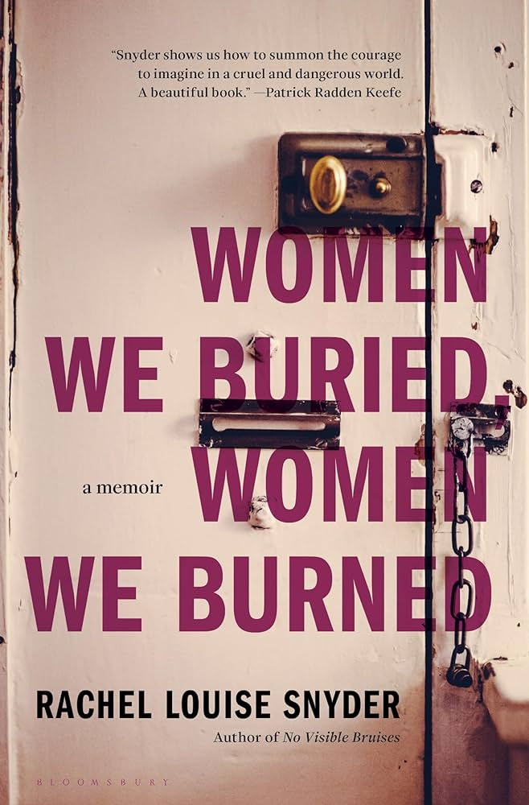

Back to Main Page
Women We Buried, Women We Burned

- Title: Women We Buried, Women We Burned
- Author: Rachel Louise Snyder
- Price: $24.99 CAD
- Publisher: Bloomsbury Publishing
- Summary: Women We Buried, Women We Burned is a memoir written by Rachel Louise Snyder about her life in a family grappling with the loss of a mother, the rule of her father and her experience of the world as she tried to become an adult much too early. Readers will feel their hearts move as they learn of the experience that Snyder shares and the stories she tells of women from around the world as they grapple with equality and their own demons.
- Reviews
- Before Rachel Louise Snyder settled on the subject of her previous book, “No Visible Bruises: What We Don’t Know About Domestic Violence Can Kill Us” (2019), she says she believed “all the common assumptions” about domestic violence: that such harm was private, separable from the harm done to strangers; that shelters usually offered an adequate solution for victims; and that if the brutality became unbearable, a victim could just leave.
After all, Snyder had left. As she recalls in her new memoir, “Women We Buried, Women We Burned,” she was 16 when her father and stepmother lined up four suitcases by the front door and informed Snyder, her older brother and her two older stepsiblings that they were no longer welcome in their suburban Chicago home. For half a dozen years in the 1980s, Snyder and her siblings had been expected to submit to a strict evangelical upbringing on pain of physical punishment. Discipline involved long conversations and lectures on proper behavior, as her father read passages from the Bible. Then the children would assume their positions, leaning over and waiting for the hard smack of the paddle, as if they were objects on “an assembly line.”
Getting kicked out brought Snyder a reprieve while also introducing new troubles. She remembers “careening between terror and elation.” She had already been expelled from the high school she had barely attended, obtaining a G.P.A. of 0.467. What followed were years when she slept on couches and in her car while working multiple jobs, a couple of them at the same time. Her memoir recounts a premature coming-of-age, when necessity forced her to gain independence while knowing nothing about actual freedom.
She would eventually get her G.E.D., go to college and then to graduate school; a generous uncle helped her spend a semester at sea, where she could see that the world was much bigger than the confines of an evangelical childhood. For a stretch of six years she was a journalist based in Cambodia. She fell in love and had a daughter while living abroad, finding support in an intentional family of friends she has known now for 30 years.
This is in many ways an inspirational book, but I wouldn’t call it a comforting one. Snyder would never succumb to the pretty idea that suffering makes a person stronger. What she does describe — vividly and powerfully — is how, instead of responding to relentless hardship by building a protective carapace against the world, she was determined to open herself up to possibility. As a journalist, she wrote about atrocities and disasters, refugees and child brides: “Slowly, I was learning of the bottomless capacity for both human cruelty and human survival.” She wanted to understand what people do in order to get by.
Her memoir is bookended by death — and also by life, since Snyder observes the world with both an unsparing eye and a generous spirit. Losing her mother is the event she remembers as setting a long catastrophe in motion. Her mother was beautiful, sophisticated, loving and Jewish; she died of breast cancer when Rachel was 8, after which all the bad things — her father’s remarriage; his rigid evangelicalism; the routine and ritualized violence — began.
Almost four decades later, Snyder’s stepmother, Barbara, was dying of colorectal cancer. “I’m sorry it’s happening to both of you again,” she said to Snyder and her father. Snyder was moved and struck by this. “What kind of grace was it to have someone apologize for her possible death?”
By that time, Snyder had reconciled with her father and Barbara, deciding not to foreclose the possibility of her daughter having a relationship with them. Although the reconciliation was real, it wasn’t the same as exoneration. “I want to say that my parents did the best they could under the circumstances and with the resources they had,” Snyder writes. “But I don’t think this is true. I don’t think they did their best.”
Still, she understands that her love for her daughter entails relinquishing some control. “Didn’t love ultimately mean you let go, let a person decide for herself, even if you disagreed?” Snyder writes this in a passage about how fearful and controlling her father was. But over time she has learned to see him whole — evidence that is humanizing, even if it isn’t exculpatory. Her father “was authoritarian and loving, inflexible and hilarious,” she writes. “Far from being paradoxical, I eventually understood that we all embody these extremes.”
Instead of getting trapped in the familiar impasse of either/or, Snyder thinks in terms of ands. This expansiveness is of a piece with her writing on domestic violence, which points out how the tendency to reach for simplistic binaries — punishment versus rehabilitation; mental health treatment versus gun laws — ends up endangering victims. Addressing a problem that is so tangled and entrenched requires more than the easy presumption that a single solution (that happens to dovetail with one’s political preferences) is obviously the right one, to the exclusion of others. As Snyder put it in a 2022 essay, “We need to have not merely one answer but many.”
Her memoir can be read as the story of how she came to a parallel realization in her own life. As Snyder tended to her dying stepmother, she learned that Barbara’s first husband had abused her. “My father, in comparison, was saintly,” Snyder writes. She witnesses up close her father’s endless patience with Barbara’s needs, how “exhaustive” he is “in his care.” But he is also somebody who subscribes to asinine (and dangerous) ideas about medicine, insisting that Barbara be “treated” by an “alternative oncologist” (a former pediatrician with multiple malpractice suits on his record) and sneaking vitamin C and sugar water into her IV line.
All of this is hard to reconcile, but Snyder’s memoir shows how one might — must — live amid multiple truths. During her time in Phnom Penh, she lived not far from Tuol Sleng, the horrific prison at the center of the Cambodian genocide. During the day, tourists visited the prison’s museum. At night, the place turned into a parking garage. “There was the horror and the memory, there were the ghosts and the darkness,” she says, “but there was also the absolute utilitarian need to go on.”
- “Time swoops in and fuses you back together. There is nothing special to see here, about me, about my mother, about our story,” writes Rachel Louise Snyder toward the beginning of her absorbing new memoir, “Women We Buried, Women We Burned.” Unlike many memoirists, she seems completely uninterested in self-mythologizing or reveling in her specialness. Though her childhood is unusually arduous, her writing is stripped of self-pity.
At 8, Snyder’s life unravels when her mother dies of breast cancer, and the whole world, as she knew it, disappears. After growing up in a Jewish, urban home with brie and hummus and passover seders with a big, warm family, she and her brother are suddenly transported to a strict, evangelical household where dinner is a casserole of eggs dotted with a few mini hot dogs. Within months her father remarries and demands that they call his new wife “mom.” As they struggle to adjust, her father beats the children with a wooden paddle and blocks them from any culture outside of the church. When they are teenagers he shows them a row of suitcases in their entryway and forces them to leave the house.
After struggling to support herself in various low-wage jobs, Snyder eventually manages to get her GED and goes to college. An uncle on her mother’s side pays half the expenses for a boat trip around the world, a floating educational program called “Semester at Sea” that exposes her to the ideas and travel that will inform her career as a journalist. For the first time, on the deck of that boat, she begins to sense possibility, which she calls “a wild whatever.”
Snyder’s harrowing descriptions of her childhood — such as a scene where her stepmother has her bite down on soap while reading the Bible — are precise, controlled, well-wrought. In the middle of these painful vignettes, I thought of William Wordsworth’s idea of “emotion recollected in tranquility.” Snyder seems to have obtained a kind of fruitful distance from childhood trauma, a serenity and perspective that few people achieve in their lifetime, which allows her to write very powerfully about these moments, to evoke them. Her restraint and pared-down prose allow the reader to enter the scene, to see, in a way that more obtrusive narration would not.
Violence and rupture have long been themes of Snyder’s work. As an international reporter, she chronicled the destruction of human tragedies and natural disasters in places like Cambodia, India, Africa and Tibet, and in 2019 she interrogated domestic violence with her book, “No Visible Bruises.” In her new memoir, Snyder brings a journalist’s eye to her own past, applying balance and precision to intimate family scenes, which is incredibly difficult to do. She says at one point, “I wrote the world, my world, to explain it to myself.” And the recording is primary here, getting it down on the page. Her writing is clear as a stream.
In college, she discovers writing as an “exercise in which to examine the complexities and seeming contradictions of people,” and she carries this method into her memoir. Her father and stepmother are both abusive and struggling, monstrous and appealing. She allows herself to examine the pathologies of her household without resolving her reactions or interpretations too neatly. When she has her own baby, she writes: “I want to say that my parents did the best they could under the circumstances and with the resources they had. But I don’t think this is true. I don’t think they did their best.”
There are moments when the reader may wish for more of a confrontation, a denouement, for more of her holding her father accountable. One imagines, behind the scenes, an editor pushing her to take a stronger stance, to condemn her father more straightforwardly, because the genre almost requires it, and Snyder resisting her editor’s advice. She seems to err always on the side of nuance, complexity, capaciousness. She manages to be both generous and penetrating, forgiving and unsentimental. She seems more interested in bearing witness, in high-level storytelling, than dividing the world into villains and victims.
When Snyder finds out that her father lost the college fund her mother had left her, she writes: “It tore me in half, both his own sorrow and his abject failure. Both her foresight and her absence. … I wanted to scratch his eyes out, punch him in the face as hard as I could, shake him till he passed out. But as much as I wanted to rage at him, I also couldn’t, not when he was showing so much vulnerability. Sympathy and anger tangled inside me.”
She is able to evoke the violence and rage and grief of the child through the quiet power of her descriptions. She never assumes the post-therapeutic mantle of having figured everything out, and yet the book feels like it reaches a satisfying peace and chronicles emotional progress. The memoir respects the idea that the past is not one thing but a story in motion, subject to shifts and changes within its narrator.
One tiny quibble I have is that I found myself disappointed in the last line, which I won’t give away. Too neat perhaps? Too redemptive? Too sentimental for such a sharp, clear-eyed book? And yet, overall, this is a superb memoir, a bracing piece of prose, a glittering testimony to endurance and the power of writing to offer a lifeline to the struggling.
- Reason for Purchase: The people of Beak City are intellectuals who are looking towards the future, yet for us to move forward we must understand the past. It is for this reason that I chose Women We Buried, Women We Burned for the library. In this memoir Snyder speaks of her hardships and the experiences she had with the world and her family. By learning what issues are and the experiences that people have we can learn to change and to prevent the same negative circumstances from happening. Additionally, this book is a memoir, meaning that it is written from personal experience and the recounting of stories. These kinds of raw stories are often not very interesting to those who are not very scholarly, however due to the large percentage of learned individuals in the city I believe that these kinds of raw stories on issues they deeply care about will cause people to gain interest in the books the library has to offer.